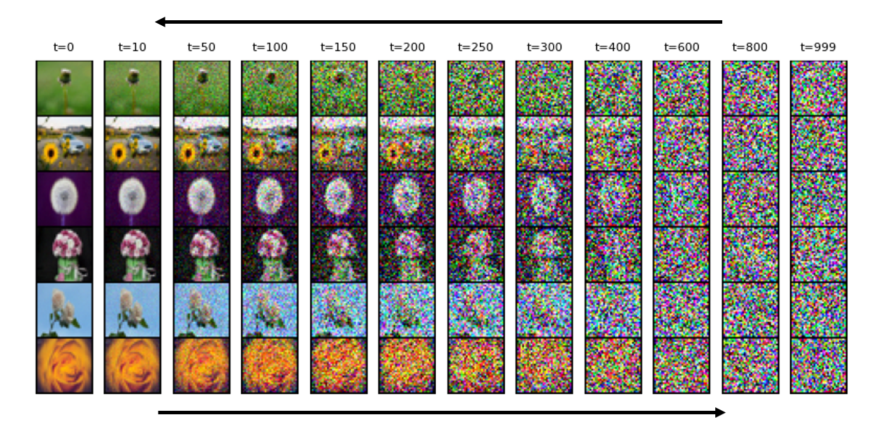

Imagine an AI that can turn a block of random noise into a breathtaking image, or better yet, generate an image based on your wildest textual descriptions!
Sounds like science fiction, right? Welcome to the fascinating world of diffusion models—a cutting-edge technology in deep learning that's pushing the boundaries of generative models.
Let's dive deep into how these models work, how they're trained, and how they can generate incredible images from textual prompts.

What Are Diffusion Models?
Diffusion models are a type of generative model that creates data by starting with pure noise and gradually refining it until it looks like real data.
Think of it as sculpting a statue: you start with a rough block (noise) and chisel away (refine) until you reveal the masterpiece (image). It has two-phase process:
Forward Process (Diffusion): This phase involves adding noise to an image step by step until it becomes pure noise.
Imagine gradually blurring a photo until it's completely unrecognizable.
Mathematically, we add Gaussian noise at each step, controlled by a noise schedule function \( β_t \).
Reverse Process (Denoising): Here, the model learns to reverse the noise addition.
It starts with a noisy image and iteratively removes the noise, trying to recover the original image.
Training a Diffusion Model: The Nitty-Gritty
Training a diffusion model involves teaching it to predict and remove noise from images at various stages of the forward process.
Here's a step-by-step breakdown of the training process.
Data Preparation: Start with a dataset of real images \({x_0}\). These images are your training ground.
Adding Noise (Forward Process): For each image \( x_0 \), select a random time step \( t \)
(ranging from 1 to total number of steps \( T \)) and add noise to create a sequence of noisy images \( x_t \).
Here, \(ε\) is Gaussian noise, and \(\alpha_t\) is a cumulative product of noise factors \(β_t\).
Training Objective: The goal is to train a neural network \(ε_θ\) to predict the added noise \(ε\) by learning
to minimize the difference between the true noise and the predicted noise.
Training Text Guided Diffusion Model: Integrating Text Prompts
Now, let's sprinkle some magic dust on our diffusion model and make it text-guided. Imagine describing an image in words and having the AI bring it to life!
Text-Image Pairs: Use a dataset with text-image pairs (e.g., MS COCO).
Text Embedding: Convert textual descriptions into embeddings using a pre-trained text encoder like CLIP.
Conditional Diffusion Model: Modify the diffusion model to condition on both the noisy image \(x_t\) and the text embedding \(z\).
Sample a Text-Image Pair: Take an image \(x_0\) and its corresponding text description.
Generate Text Embedding: Convert the text description to a text embedding \(z\) using CLIP.
Add Noise to Image: For a randomly selected time step \(t\), add noise to the image \(x_0\).
Train the Model to Predict Noise: Predict the noise added to \(x_t\), conditioned on both \(x_t\) and the text embedding \(z\).
Once trained, the model can generate new images by starting with pure noise and gradually refining it.
Start with Noise: Begin with a random noise image \(x_T\).
Iterative Denoising: For each time step \(t\) from \(T\) down to 1, use the trained model to predict the noise \(ε_t\).
Then, remove the predicted noise to get the previous step's image \(x_{t-1}\) conditioned on both \(x_t\) (and the text embedding \(z\)).
Image inpainting: Diffusion models can be used to fill in missing or corrupted parts of an image, effectively "inpainting" the missing information.
Style transfer: By conditioning the diffusion model on a style image, it can generate new images that combine the content of one image with the style of another.
Data augmentation: Diffusion models can be used to generate synthetic data for training machine learning models, helping to increase the size and diversity of the training dataset.
Video synthesis: By extending the diffusion process to video frames, diffusion models can generate realistic and coherent video sequences.
Text-to-image synthesis: By conditioning the diffusion model on a text prompt, it can generate images that match the textual description, enabling text-to-image synthesis.
Wrapping Up
Diffusion models represent a giant leap forward in the field of generative models, capable of producing stunningly realistic images.
By learning to denoise progressively, these models can transform random noise into intricate images.
When coupled with text prompts, they unlock a whole new level of creativity, turning your words into visual art.
Whether you're a researcher, artist, or just an AI enthusiast, diffusion models offer a glimpse into the future of AI-generated content.
So, what image will you create today?